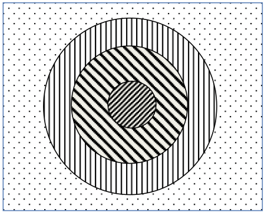

VisIVO Filter¶
VisIVO Filter is a component that converts data from a VisIVO Binary Table (VBT) into a new one or can create a Volume from a table.
To get a general help:
$ VisIVOFilter --help
To get a specific operation help:
$ VisIVOFilter --op <operation> --help
To run the operation:
$ VisIVOFilter --op <operation> <parameters> [--file] InputFile
Note
The InputFile must be a valid VBT. InputFile.bin and InputFile.bin.head must exist.
Global options¶
The following option can be given on any filter operation.
- --memsizelimit <percentage>
This option reduces the memory request of the percentage value given with this option.
Depending on the specific filter request and on the system where VisIVOFilter runs, the allocated memory could exceed the available size and the application could be aborted or can use a significant portion of the system swap area, with a dramatic lost of performance.
This parameter can be given to reduce the allocated space avoiding this effect.
A Warning message will be given when this option is used. The allowed value is a float greater than 0. and lower than 95.0.
- --history
Create an XML file which contains the history of operations performed.
- --historyfile <file.xml>
Change output history file name. Default:
hist.xml.
Parameter file¶
Alternatively, to run the operation with options specified in the parameter file:
$ VisIVOFilter <parameterFile>
Lines starting with # are comments.
An example of this file is the following (for the randomizer filter):
op=randomizer
#memsizelimit=30 This is a commented line
perc=50.0
iseed=1
out=VBT_rand.bin
file=VBT.bin
Operations¶
The following operations are available:
Add ID¶
This operation adds a new column with a sequence of Ids in the input data table.
Usage:
$ VisIVOFilter --op addId [--outcol col_name] [--start start_number] [--file] inputFile.bin
Options:
- --outcol
Column name of the new id column. Default name is Id.
- --start
Starting Id. Default value is 0. Only an int value can be given.
- --file
Input table filename.
Append¶
This operation creates a new table appending data from a list of existing tables. Append Filter can append up to 100 tables with the same number of Columns.
Usage:
$ VisIVOFilter --op append [--out filename_out.bin] [--filelist] table_list.txt
Options:
- --out
Output table filename. Default name is given.
- --filelist
Input filename containing the table list.
table_list.txt is a file that contains a list of valid table names. The “.bin” extension is automatically added if the listed filename does not contain it.
tab1
tab2
tab3
Note
The column names are copied from the first table. An error is given if tables contain different numbers of columns.
Cartesian2Polar¶
This operation creates three new fields in a data table as the result of the spherical polar transformation of three existing fields.
Usage:
$ VisIVOFilter --op cartesian2polar --field X Y Z [--append] [--outcol rho theta phi] [--out filename_out.bin] [--file] inputFile.bin
Options:
- --field
Three valid columns name used as cartesian coordinates.
- --append
No new table will be created. The original table will have new fields. Default options: a new table with only the new field is produced.
- --outcol
Column name of the new fields. Default names are: rho, theta and phi.
- --out
Name of the new table. Default name is given. Ignored if –append is specified.
- --file
Input table filename.
Change Column name¶
This operation changes the column names in an existing table.
Usage:
$ VisIVOFilter --op changecolname --field column_names --newnames new_names [--file] inputFile.bin
Options:
- --field
Valid columns names.
- --newnames
Valid new columns names.
- --file
Input table filename.
Cut¶
This operation fixes column values included in an interval to a threshold.
Usage:
$ VisIVOFilter --op cut [--field columns_list] --limits limitsfile.txt [--threshold value] [--operator AND/OR] [--out filename_out.bin] [--file] inputFile.bin
The limitsfile.txt file must have the following structure. A valid column name and an interval indicating the extraction limits:
X 20.0 30.0
Y 10.0 20.0
Z 0.0 10.0
Note
The unlimited word can be used to indicate the infinite value.
Options:
- --field
It is a valid columns name list to be reported in the new table. Default: all columns will be reported.
- --limits
A file that has three columns: a valid column name and an interval indicating the extraction limits.
- --threshold
Value to be used to cut data. Default value is 0.
- --operator
Limits on all fields listed in the –limits option file are combined by default with logic AND operator. If this option is given with the OR value the field limits are combined with logic OR operator.
- --out
Output table filename. Default name is given.
- --file
Input table filename.
The example file and the following command:
$ VisIVOFilter --op cut --field A B C --limits limitsfile.txt --operator AND --out filename_out.bin --threshold 1.0 --file inputFile.bin
produce a new table that contains all the data points and columns of the input table. In any row where \(X \in [20.0, 30.0]\) AND \(Y \in [10.0, 20.0]\) AND \(Z \in [0.0, 10.0]\) the fields A B and C will be changed with the threshold value 1.0. Other fields will not be changed.
Decimator¶
This operation creates a sub-table as a regular subsample from the input table.
Usage:
$ VisIVOFilter --op decimator --skip step [--list parameters] [--out filename_out.bin] [--file] inputFile.bin
Options:
- --skip
An integer that represent the number of elements to skip.
- --list
Valid columns names of the input table. Default: all columns are included.
- --out
Output table filename. Default name is given.
- --file
Input table filename.
Values are extracted in a regular sequence, skipping step element every time. The skip value is an integer number > 1 and represents the number of skipped values. The output table must fit the available RAM.
Extraction¶
This operation creates a new table from a sub-box or a sphere.
Note
Operation not allowed on volumes.
Usage:
$ VisIVOFilter --op extraction --geometry geometry.txt [--out filename_out.bin] [--file] inputFile.bin
Options:
- --geometry
The
geometry.txtfile must have four rows and two columns. The first three rows must have a valid column name and a value for each column that indicates the extraction coordinates. The fourth field means the extraction mode and the sub-volume size:RADIUS, a sphere centered in the given values will be extracted;
CORNER, a rectangular region having the lower corner at the given values will be extracted;
BOX, a rectangular region centered in the given values will be extracted.
- --out
Output table filename. Default name is given.
- --file
Input table filename.
Geometry file examples:
X 25.0
Y 25.0
Z 25.0
RADIUS 5.0
X 0.0
Y 0.0
Z 0.0
CORNER 10.0
X 25.0
Y 25.0
Z 25.0
BOX 5.0
Extract List¶
This operation creates a new table from an input table with the elements (rows) listed in a given multi-list file. A multi-list is given in ascii or binary format (unsigned long long int).
Note
Operation not allowed on volumes.
Usage:
$ VisIVOFilter --op extractlist --multilist filename_list [--binaryint] [--asciilist] [--numberlists NL] [--listelements N0] [--onelist] [--out filename_out.bin] [--file] inputFile.bin
Options:
- --multilist
The multi-list file name.
- --binaryint
If this parameter is specified the multi-list file is in binary int. Defalt format: binary unsigned long long int.
- --asciilist
If this parameter is specified the multi-list file is an ascii text.
- --numberlists
The multi-list file format is just a sequence of NL lists specified in this option. Each list starts with the number of elements in the list.
- --listelements
The multi-list file format is just a sequence of NL lists. Each list has the same number of N0 elements. This option requires that the –numberlists option is specified, otherwise it is ignored.
- --onelist
If this option is given, the multi-list file is considered as only one list. Each element is the ID of the particle to be extracted. The –numberlists and –listelements options will be ignored.
- --out
Name of the new table. Default name is given.
- --file
Input table filename.
The multi-list has the following structure:
Number NL of lists
NL sequences:
1) Number N0 of elements in the list,
2) N0 elements
Option can be given to provide the NL number. In this case the multi-list file must not contain this information. Option can be given to provide the N0 number. In this case the multi-list file must not contain this informations but it is a multi-list, each list must contain N0 elements.
If the onelist option is given the multi-list file is only a sequence of rows to be extracted.
Multi-list ascii file example:
2 # N of lists
4 # N of elments of the 1st list
1 # Start sequence of the 1st list
7
27
100 # End of the 1st list
6 # N of elments of the 2nd list
4
8
15
16
23
42
Extract Subvolume¶
This operation extract a table which is a sub-volume from the original volume.
Usage:
$ VisIVOFilters --op extractsubvolume --startingcell X Y Z --resolution x_res y_res z_res [--field column_names] [--out filename_out.bin] [--help] [--file] inputFile.bin
As an example the following command:
$ VisIVOFilters --op extractsubvolume --startingcell 8 8 8 --field Mass Temperature --resolution 16 16 16 --out mysubvolume.bin --file inputFile.bin
produces a new table volume (mysubvolume.bin and mysubvolume.bin.head) that is a sub-volume of resolution 16x16x16 from the original volume and starting from the cell (8,8,8) of the original mesh. Only Mass and Temperature fields will be reported in the new table.
Options:
- --startingcell
X Y Z number of the first cell to be extracted: 0 0 0 is the first cell of the original grid.
- --resolution
Grid size (3D) of the new subgrid.
- --field
Valid columns name list to be reported in the new table.
- --out
Name of the new table. Default name is given.
- --file
Input table filename.
Grid2Point¶
This operation distributes a volume property to a point data set on the same computational domain using a field distribution (CIC/NGP/TSC algorithm) on a regular mesh. CIC is the default adopted algorithm. The Cell geometry is considered only to compute the cell volume value in this operation.
This filter produces a new table or adds a new field to the input table.
The operation performs the following:
It loads a volume (input volume data table) and a table with a point distribution in the same volume;
It computes, using a CIC or NGP or TSC algorithm, a value (assumed density) for each data point, considering the cells value where the point is spread. The grid points density values are multiplied for the cell volume and assigned to the point. If the density option is given the cell volume is assumed =1;
It saves the property in a new table or adds the field to the original input table.
Usage:
$ VisIVOFilter --op grid2point --points x_col y_col z_col [--field column_name] [--density] [--append] [--out filename_out.bin] [--outcol col_name] [--tsc] [--ngp] --volume inputVolmeData.bin [--gridOrigin xg0 xg1 xg2] [--gridSpacing sg0 sg1 sg2] [--box length] [--periodic] [--file] inputFile.bin
Options:
- --points
Columns to be assumed for points coordinates.
- --field
Valid Volume Column Name. Default value is the first column name.
- --density
Cell volume is not considered (cell volume=1).
- --append
No new table will be created. The original table will have the new field.
- --out
Name of the new table. Default name is given. Ignored if –append is specified.
- --outcol
Column name of the new field.
- --tsc
The TSC algorithm is adopted.
- --ngp
The NGP algorithm is adopted.
- --volume
Input data volume filename (a VisIVO Binary Table).
- --gridOrigin
It specifies the coordinate of the lower left corner of the grid. Default values are assumed from the box of
inputFile.bin.- --gridSpacing
It specifies the length of each cell dimension in arbitrary unit. This parameter is ignored if the box option is given. Default values are assumed from the box of
inputFile.bin.- --box
It specifies the length of a box. Default value is assumed from the box of
inputFile.binif the gridSpacing option is not given.- --periodic
Applies a periodical boundary condition.
- --file
Input table filename with point distribution.
Include¶
This operation produces a new table or adds a new field to the input table. Points inside the sphere (given with center and radius) will have the value invalue, otherwise outvalue.
Usage:
$ VisIVOFilter --op include --center x_coord y_coord z_coord --radius radius [--field x_col y_col z_col] [--append] [--out filename_out.bin] [--outcol col_name] [--outvalue outvalue] [--invalue invalue] [--file] inputFile.bin
Options:
- --center
Coordinates of the sphere center.
- --radius
Radius of the sphere.
- --field
Three valid columns names. Default values are the first three columns.
- --append
No new table will be created. The original table will have the new field.
- --out
Name of the new table. Default name is given. Ignored if –append is specified.
- --outcol
Column name of the new field.
- --outvalue
Value given to points outside the sphere. Default value is 0.
- --invalue
Value given to points inside the sphere. Default value is 1.
- --file
Input table filename.
Interpolate¶
This operation creates new tables from two existing data tables (mainly used to produce intermediate frames of a dynamical evolution).
Usage:
$ VisIVOFilter --op interpolate [--field columns_name] [--numbin numberbin] [--periodic] [--interval from to] [--out filename_out] --infiles file_start.bin file_end.bin
Note
The two table must have the same structure. The infiles tables must have the listed columns in the –field option in the same corresponding order. The input tables must have the same number of rows and the interpolated elements are considered in the same order. No index is currently supported.
Options:
- --field
A valid list of columns names that must exist on both input tables. Default: all columns in infile files are considered.
- --numbin
Is the number of bins between the starting and ending input files or the interval given in the –interval option. The default value is 10. The number of created tables is equal to numberbin-1.
- --periodic
Applies a periodical boundary condition.
- --interval
VisIVO assumes a distance of 1.0 between the starting frame and ending frame. This option produces the intermediate frames (tables) in a subinterval between the two input frames.
The value 0.5 is the medium point of the interval. If the from value is lower than 0.0 it is considered 0.0. If the to value is greater than 1.0 it is considered 1.0. If the from value is equal to to value the operation is not performed. Default value from=0.0 to=1.0
- --out
It is the root name of the new tables. The default name is given. The new name is given by the
filename_out#.binwhere # is the number of created tables.- --infiles
It contains the names of the input tables of the interpolation process.
Math Operations¶
The operation creates a new field in a data table as the result of a mathematical operation between the existing fields.
Usage:
$ VisIVOFilter --op mathop [--expression math_expression.txt] [--compute <<expression>>] [--append] [--outcol col_name] [--out filename_out.bin] [--file] filename.bin
Options:
- --expression
A file with only one row having any valid mathematical expression with Valid Column names. Ignored if compute option is given.
- --compute
A valid mathematical expression with Valid Column names. The expression must start with << and finish with >> characters. It has the priority on the expression option.
The expression must contain the escape character control for the << and >> symbols and the parentheses. For example, to evaluate \((A/B) * C\) the correct syntax will be
–-compute \<\<\(A/B\)*C\>\>.Note
The << , >> and escape characters must not be given if the parameter file is used.
- --append
No new table will be created. The original table will have the new field. Default options: a new table with only the new field is produced.
- --outcol
Column name of the new field
- --out
Output table filename. Default name is given. Ignored if –append is specified.
- --file
Input table filename.
math_expression.txt is a file that contains only one row with a mathematical expression, for example:
sqrt(VelX*VelX+VelY*VelY+VelZ*VelZ)
Arithmetic float expressions can be created from float literals, variables or functions using the following operators in this order of precedence:
() |
expressions in parentheses first |
A unit |
a unit multiplier (if one has been added) exponentiation (A raised to the power B) |
A^B |
exponentiation (A raised to the power B) |
-A |
unary minus |
!A |
unary logical not (result is 1 if int(A) is 0, else 0) |
A*B A/B A%B |
multiplication, division and modulo |
A+B A-B |
addition and subtraction |
A=B A!=B A<B A<=B A>B A>=B |
comparison between A and B (result is either 0 or 1) |
A&B |
result is 1 if int(A) and int(B) differ from 0, else 0 |
A|B |
result is 1 if int(A) or int(B) differ from 0, else 0 |
Since the unary minus has higher precedence than any other operator, the following expression is valid: x*-y.
The comparison operators use an epsilon value, so expressions which may differ in very least-significant digits should work correctly.
The following operations can be used:
abs(A) |
Absolute value of A. If A is negative, returns -A otherwise returns A. |
acos(A) |
Arc-cosine of A. Returns the angle, measured in radians, whose cosine is A. |
acosh(A) |
Same as acos() but for hyperbolic cosine. |
asin(A) |
Arc-sine of A. Returns the angle, measured in radians, whose sine is A. |
asinh(A) |
Same as asin() but for hyperbolic sine. |
atan(A) |
Arc-tangent of (A). Returns the angle, measured in radians, whose tangent is (A). |
atan2(A,B) |
Arc-tangent of A/B. The two main differences to atan() is that it will return the right angle depending on the signs of A and B (atan() can only return values between -pi/2 and pi/2), and that the return value of pi/2 and -pi/2 are possible. |
atanh(A) |
Same as atan() but for hyperbolic tangent. |
ceil(A) |
Ceiling of A. Returns the smallest integer greater than A. Rounds up to the next higher integer. |
cos(A) |
Cosine of A. Returns the cosine of the angle A, where A is measured in radians. |
cosh(A) |
Same as cos() but for hyperbolic cosine. |
cot(A) |
Cotangent of A (equivalent to 1/tan(A)). |
csc(A) |
Cosecant of A (equivalent to 1/sin(A)). |
exp(A) |
Exponential of A. Returns the value of e raised to the power A where e is the base of the natural logarithm, i.e. the non-repeating value approximately equal to 2.71828182846. |
floor(A) |
Floor of A. Returns the largest integer less than A. Rounds down to the next lower integer. |
if(A,B,C) |
If int(A) differs from 0, the return value of this function is B, else C. Only the parameter which needs to be evaluated is evaluated, the other parameter is skipped; this makes it safe to use eval() in them. |
int(A) |
Rounds A to the closest integer. 0.5 is rounded to 1. |
log(A) |
Natural (base e) logarithm of A. |
log10(A) |
Base 10 logarithm of A. |
max(A,B) |
If A>B, the result is A, else B. |
min(A,B) |
If A<B, the result is A, else B. |
sec(A) |
Secant of A (equivalent to 1/cos(A)). |
sin(A) |
Sine of A. Returns the sine of the angle A, where A is measured in radians. |
sinh(A) |
Same as sin() but for hyperbolic sine. |
sqrt(A) |
Square root of A. Returns the value whose square is A. |
tan(A) |
Tangent of A. Returns the tangent of the angle A, where A is measured in radians. |
tanh(A) |
Same as tan() but for hyperbolic tangent. |
Merge¶
This operation creates a new table from two or more existing data tables. Up to 100 tables can be merged. Volumes can be merged but they must have the same geometry.
Usage:
$ VisIVOFilter --op merge [--size HUGE/SMALLEST] [--pad value] [--out filename_out.bin] [--filelist] tab_selection_file.txt
Options:
- --size
Produce a new table having the size of the smallest (or larger) table. Default option: SMALLEST.
- --pad
Pad the table rows of smaller table with the given value if HUGE size is used. Default value: 0.
- --out
Output table filename. Default name is given.
- --filelist
Input filename containing the table list.
The tab_selection_file.txt is a file that contain a list of tables and valid columns. Wildcard “*” means all the columns of the given table. An example file is the following:
tab1.bin Col_1
tab1.bin Col_2
tab5.bin Col_x
tab4.bin *
This file a new table having columns Col_1 and Col_2 from tab1.bin, Col_x from tab5.bin and all the columns of tab4.bin.
Module¶
This operation creates a new table (or a new field) computing the module of three fields of the input data table.
Usage:
$ VisIVOFilter --op module --field parameters [--append] [--outcol colname] [--out filename_out.bin] [--file] inputFile.bin
Options:
- --field
Three valid columns name lists used to compute the module.
- --append
No new table will be created. The original table will have the new field. Default options: a new table with only the new field is produced.
- --outcol
Column name of the new field.
- --out
Name of the new table. Default name is given. Ignored if –append is specified.
- --file
Input table filename
Example:
$ VisIVOFilter --op module --field x y z --outcol Module --append --file inputFile.bin
This command appends a new field named Module to the inputFile.bin file that represents the module of the fields x, y and z: \(\sqrt{x^2+y^2+z^2}\).
Multi Resolution¶
This operation creates a new VBT as a random subsample from the input table, with different resolutions.
Starting from a fixed position, that represents the center of inner sphere, concentric spheres are considered. Different level of randomization can be given, creating more detail table in the inner sphere and lower detail in the outer regions, or vice versa. The region that is external to the last sphere represents the background.
Note
Operation not yet allowed on volumes.
Usage:
$ VisIVOFilter --op mres --points x_col y_col z_col [--pos values] [--geometry layer_file.txt] [--background value] [--out filename_out.bin] [--file] inputFile.bin
Options:
- --points
Columns to be assumed for points coordinates.
- --pos
Camera point coordinates. Default value is the center of the domain.
- --geometry
A file that contains a radius and a randomization value: 1.0 all values included; 0.1 means 1 per cent of values included in the layer. Each row of this file determine a layer. A default geometry is created with three spheres and different levels of randomization, depending on the input dataset.
- --background
A randomizator value for points outside the geometry. Default value is maximum 100000 values from input VBT.
- --out
Name of the new table. Default name is given.
- --file
Input table filename.
For example, the following command and file:
$ VisIVOFilter --op mres --points X Y Z --pos 10.0 10.0 10.0 --geometry layer.txt --background 0.0001 --out pos_layer.bin --file pos.bin
5.0 1.0
10.0 0.1
30.0 0.01
produce a new table.
The geometry file in this example, has the following values:
5.0 is the radius of the inner sphere. The 1.0 is the percentage of randomization inside the inner sphere: all points that are inside the inner sphere will be reported in the output VBT.
10.0 is the radius of the second sphere. The value 0.1 is the percentage of randomization inside this sphere: only 10% of points that are inside this sphere will be reported in the output VBT.
30.0 is the radius of the last sphere. The value 0.01 is the percentage of randomization inside this sphere: only 1% of points that are inside this sphere will be reported in the output VBT.

Poca¶
This operation produces two tables. The first one contains scattering points and angles. The second is a volume: each mesh point contains the square sum of the scattering angle.
The input file must be the output from the muportal importer with 10 column: Event number, X_A Y_B X_C Y_D X_E Y_F X_G Y_H (8 values coordinates in cm at the planes of the system), Energy pulse in GeV/C.
Usage:
$ VisIVOFilter --op poca [--resolution x_res y_res z_res] [--dimvox voxel_size] [--trackplanedist distance] [--innerdist distance] [--outpoints points.bin] [--outvol vol.bin] [--file] inputFile.bin
Options:
- --resolution
3D mesh size in cm. Default value 600 300 300.
- --dimvox
Cubic voxel dimension in cm. Default value 10.
- --trackplanedist
Distance in cm between planes 1 - 2 and planes 3 - 4. Default value 100.
- --innerdist
Distance in cm between planes 3 - 4. Default value 300.
- --outpoints
Name of the new table containing poca points.
- --outvol
Name of the new table containing the volume having the theta square value sum in each voxel.
- --file
Input table filename.
For example, the following command:
$ VisIVOFilter --op poca --resolution 600 300 300 --dimvox 10 --outpoins points --outvol vol.bin --file inputFile.bin
Produces a points file VBT with scatter points inside the volume of reference a 60x30x30 and a multi-volume.
The input file is a VBT with 10 columns that represent: Event number, X_A Y_B X_C Y_D X_E Y_F X_G Y_H (8 values coordinates in cm at the planes of the system), Pulse energy in GeV/C.
The filter gives the track Id and the Energy of each points X Y Z. This is the output of the Importer “muportal”.
It produces two tables (points.bin and vol.bin) containing:
The points of the POCA algorithm and angles with the following fields: event number, X, Y and Z, theta, theta square, energy.
A multi-volume (7 volumes) with cell resolution/dimvox on each directiom. Each voxel contatins quantities of all scattering points inside the voxel: sum of the theta (scattering angle), sum of theta square, theta square average, sigma, error and number of scatter points.
Point Distribute¶
This operation creates a table which represents a volume from selected fields of the input table that are distributed using NGP, CIC (default) or TSC algorithm. The filter produces (by default) a density field: the field is distributed and divided for the cell volume.
Usage:
$ VisIVOFilter --op pointdistribute --resolution x_res y_res z_res --points x_col y_col z_col [--field column_names] [--constant value] [--nodensity] [--avg] [--out filename_out.bin] [--tsc] [--ngp] [--gridOrigin xg0 xg1 xg2] [--gridSpacing sg0 sg1 sg2] [--box length] [--periodic] [--file] inputFile.bin
Options:
- --resolution
3D mesh size.
- --points
Columns to be assumed for points coordinates.
- --field
Valid columns name list to be distributed in the grid.
- --constant
Assign a constant value to all points, to be distributed in the grid. Ignored if field option is given. Default value is 1.0 for all points.
- --nodensity
Overrides the default behavior. The field distribution is not divided for the cell volume.
- --avg
Distributes the first field on the volume grid and computes the arithmetic average value on each cell of the first field. The output volume table will have three fields. For each cell there will be: the number of total elements in the cell (NumberOfElements), the sum of total field value (fieldSum), and the arithmetic average value (fieldAvg). Only the ngp algorithm will be applied.
- --out
Name of the new table. Default name is given.
- --tsc
The TSC algorithm is adopted.
- --ngp
The NGP algorithm is adopted.
- --gridOrigin
It specifies the coordinates of the lower left corner of the grid. Default values are assumed from the box of
inputFile.bin.- --gridSpacing
It specifies the length of each cell dimension in the arbitrary unit. This parameter is ignored if the box option is given. Default values are assumed from the box of the
inputFile.bin.- --box
It specifies the length of a box. Default values is assumed from the box of
inputFile.binif the gridSpacing option is not given.- --periodic
It specifies the box is periodic. Particles outside the box limits are considered inside on the other side.
- --file
Input table filename.
Point Property¶
This operation assigns a property to each data point on the table.
The operation performs the following:
It creates a temporary volume using a field distribution (CIC algorithm) on a regular mesh. The temporary file will have the filename given in –out option +
_tempPDOp.binor_tempPDOp.bin, and it is automatically cleaned by the operation itself;It computes, with the same CIC algorithm, the property for each data point, considering the cells where the point is spread on the volume;
It saves the property in a new table or adds the field to the original input table. This operation cannot be applied to volumes.
Usage:
$ VisIVOFilter --op pointproperty --resolution x_res y_res z_res --points x_col y_col z_col [--field column_name] [--constant value] [--append] [--out filename_out.bin] [--outcol col_name] [--periodic] [--file] inputFile.bin
Options:
- --resolution
3D mesh size.
- --points
Columns to be assumed for points coordinates.
- --field
valid column name list to be distributed in the grid.
- --constant
Assign a constant value to all points, to be distributed in the grid. Ignored if field option is given. Default value is a 1.0 for all points.
- --append
the input table will contain the new field.
- --out
Name of the new table. Default name is given. Ignored if –append is given.
- --outcol
New field column name.
- --periodic
Applies a periodical boundary condition.
- --file
Input table filename.
For example, the following command:
$ VisIVOFilter --op pointproperty --resolution 16 16 16 --points X Y Z --field Mass --append --outcol distribute --file inputFile.bin
distributes the Mass field of points X Y Z and it produces a temporary volume. Then it calculates a new field representing the weight value of the nearest mesh-cells where the point is distributed using the same CIC algorithm.
Randomizer¶
This operation creates a random subset from the original data table.
Usage:
$ VisIVOFilter --op randomizer --perc percentage [--field parameters] [--iseed iseed] [--out filename_out.bin] [--file] inputFile.bin
Options:
- --perc
Percentage (from 0.0 to 100.0) of the input file obtained in the output file.
Note
Only the first decimal place is considered.
- --field
Valid columns names of the input table. Default: all columns are included.
- --iseed
Specify the seed for the random generation. Default value 0.
- --out
Output table filename. Default name is given.
- --file
Input table filename.
Select Columns¶
This operation creates e new table using (or excluding) one or more fields of a data table. The default case produces the output table including only listed fields.
Usage:
$ VisIVOFilter --op selcolumns --field parameters [--delete] [--out filename_out.bin] [--file] inputFile.bin
Options:
- --field
Valid columns names of the input table. Default: all columns are included.
- --delete
Produce output table excluding only field listed in the –field option.
- --out
Output table filename. Default name is given.
- --file
Input table filename.
Select Fields¶
This operation creates a new table setting limits on one or more fields of a data table. Optionally it creates a list of elements satisfying the requested condition.
Usage:
$ VisIVOFilter --op selfield --limits limitsfile.txt [--operator AND/OR] [--outlist list_filename] [--format uns/int/ascii] [--out filename_out.bin] [--file] inputFile.bin
Options:
- --limits
A file that has three columns: a valid column name and an interval indicating the extraction limits.
- --operator
Limits on all fields listed in –limits option file are combined by default with logic AND operator. If this option is given with OR value the field limits are combined with logic OR operator.
- --outlist
Output list filename containing the number of the elements satisfying the requested condition. Default name is given.
- --format
Data format in the outlist filename. Default value unsigned long long int.
- --out
Output table filename. Default name is given.
- --file
Input table filename.
The limitsfile.txt file must have the following structure. A valid column name and an interval indicating the extraction limits:
X 20.0 30.0
Y 10.0 20.0
Z 0.0 10.0
This file produces a new table that contains all the data points of the input table (all columns will be reported) where \(X \in [20.0, 30.0]\) AND \(Y \in [10.0, 20.0]\) AND \(Z \in [0.0, 10.0]\).
Note
The unlimited word can be used to indicate the infinite value.
Show Table¶
Produce an ASCII table with selected field of the first number of rows as specified in the –numrows parameter.
Usage:
$ VisIVOFilter --op showtable [--field column_name] [--numrows num_of_rows] [--rangerows fromRow toRow] [--width format_width] [--precision format_precision] [--out filename_out.txt] [--file] inputFile.bin
Options:
- --field
Valid columns names. Default value of all columns will be reported.
- --numrows
Number of rows in the ASCII output file. Default value is equal to the number of rows of the input table.
- --rangerows
Rows range of the inputFile that will be reported in the ASCII output file. Default range is equal to all the rows of the input table. It is ignored if numrows is specified.
- --width
Field width in the ASCII output file. Default value is given.
- --precision
Field precision in the ASCII output file. Default value is given.
- --out
Output ASCII filename. Default name is given.
- --file
Input table filename.
Show Volume¶
This operation writes on an output ascii file, the volume cells and their values that satisfy given limits.
Usage:
$ VisIVOFilter --op showvol [--field column_name] --limits limits.txt [--operator AND/OR] [--numcells value] [--out filename_out.txt] [--file] inputFile.bin
The limits.txt file must have the following structure: a valid column name and an interval that indicate the limits.
density 20.0 30.0
mass 10.0 20.0
Note
The keyword unlimited can be used to indicate the infinite value.
Options:
- --field
Valid columns names. Default value of ALL columns will be reported.
- --limits
A file that has three columns: a valid column name and an interval that indicate the limits.
- --operator
Limits on all field listed in the –limits option file are combined by default with logic AND operator. If this option is given with OR value the field limits are combined with logic OR operator.
- --numcells
Set the maximum number of cells that will be reported in the output.
- --out
Output ascii filename. Default name is given.
- --file
Input table filename.
The example file and the following command:
$ VisIVOFilter --op showvol --field density mass --limits limitsfile.txt --operator AND --out filename_out.txt --file inputFile.bin
produce an ascii file that lists all cells where limits are satisfied.
The output ascii file will report on each row the cell (X, Y and Z) and the field value.
Sigma Contours¶
This operation creates a new table where one or more fields of a data table have values within (or outside) N sigma contours. For the selected fields, the filter prints in the stdout the average and the sigma values of the distributions.
Note
The filter can be applied on fields that have a Gaussian distribution.
Usage:
$ VisIVOFilter --op sigmacontours [--nsigma nOfSigma] [--field columns_list] [--exclude] [--allcolumns] [--out filename_out.bin] [--file] filename.bin
Options:
- --nsigma
Number of sigma used in the variable selection. Default value: 1 sigma countour.
- --field
List of columns that must have values within N sigma contours. Default value: all the columns in the table.
- --exclude
Values outside N sigma contours will be reported.
- --allcolumns
All columns of the input tables will be saved in the output table. But only the corresponding rows for the –field selected columns are reported.
- --out
Name of the new table. Default name is given.
- --file
Input table filename.
Example:
$ VisIVOFilter --op sigmacontours --nsigma 2 --field F1 F2 F5 --allcolumns --out ncontours.bin --file example.bin
The command produces a new table where columns F1, F2 and F5 have (all of them) values included in 2 sigma contours. The option –allcolumns creates a new table with all the columns of the input table, otherwise only F1, F2 and F5 will be reported in the output table. The command also prints in the stdout the average values and the sigma values for F1, F2 and F5 columns.
Split Table¶
This operation splits an existing table into two or more tables, using a field that will be used to divide the table.
Usage:
$ VisIVOFilter --op splittable [--field column] [--volumesplit direction] [--numoftables numberOfTable] [--maxsizetable MaxMbyteSize] [--hugesplit] [--out filename_out.bin] [--file] inputFile.bin
Options:
- --field
A valid column name along which the table will be split. Must be given to split a table.
- --volumesplit
Direction (1, 2 or 3) along which the volume will be split. Must be given to split a volume.
- --numoftables
The number of tables in which the input table will be split. It must be greater than 1.
- --maxsizetable
Indicates the maximum size of the split table.
VisIVO Filter will compute how many tables will be created. This option is ignored if –numoftable option is given.
- --hugesplit
Must be given to force the generation of more than 100 tables from the input table, avoiding errors.
- --out
Output prefix root table filename. A suffix
_split_#.binis added to each generated table, to this prefix. Default name is given.- --file
Input table filename.
Statistic¶
This operation produces average, min and max value of field and creates an histogram of fields in the input table.
Usage:
$ VisIVOFilter --op statistic [--list columns_name] [--histogram [bin]] [--range min max] [--out result.txt] [--file] inputFile.bin
Options:
- --list
A valid list of columns name. Default value all columns.
- --histogram
Produces an histogram ASCII file with the given number of bins. If the bins number is not specified, the default value is fixed to 10% of the total rows of the input table.
- --range
Produces the results only inside the specified interval.
- --out
Output ASCII filename with histogram.
- --file
Input table filename.
Note
An error is given if there are no data in the specified range.
For example the following command:
$ VisIVOFilter --op statistic --list X Y --histogram 1000 --range 10.0 100.0 --out result.txt --file inputFile.bin
produces min,max and average values printed in the standard output. The command also produces a result.txt file that gives the histogram values of X and Y in the range \([10.0, 100.0]\) with 1000 bins.
Swap¶
This operation produces the Endianism swap: little Endian to big Endian data format and viceversa of a VisIVO Binary Table. It can produce a new swapped table or data can be overwritten.
Usage:
$ VisIVOFilter --op swap [--override] [--out filename_out.bin] [--file] inputFile.bin
Options:
- --override
The same input table is swapped. Data are overwritten.
- --out
Name of the new table. Default name is given. Ignored if –override is specified.
- --file
Input table filename.
Visual¶
This operation creates an eventually randomized new table from one or more input tables. All the input tables must have the same number of rows.
Note
The operation cannot be applied to volume tables.
Usage:
$ VisIVOFilter --op visual [--size number_of_elements] [--out filename_out.bin] [--filelist] tab_selection_file.txt
Options:
- --size
Number of max rows in output table. Default is the minimum between 8000000 and the number of rows of input tables.
Note
Input table must have the same number of rows.
- --out
Output table filename. Default name is given.
- --filelist
Input text file with a list of tables and columns.
The tab_selection_file.txt is a text file that contain a list of tables and valid columns. Wildcard “*” means all columns of the given table. For example:
tab1.bin Col_1
tab5.bin Col_x
tab4.bin *
tab1.bin Col_2
This file produces a new table having columns Col_1 and Col_2 from tab1.bin, Col_x from tab5.bin and all the columns of tab4.bin. If the row number of the input tables exceeds 8000000 elements, the output file will be limited to 8000000 randomized sampled rows.
The column names in the output table will have the suffix _visual_# where # represent the number order listed in the txt file. The output table will contain the columns of the listed tables in alphabetic order. In the above example, the header of the VBT (if tab4.bin contains two columns A and B and there are 8000000 rows) will be:
float
5
8000000
little
Col_1_visual_1
Col_2_visual_5
A_visual_3
B_visual_4
Col_x_visual_2
Write VOTable¶
This operation produces a VOTable 1.2 with selected field.
Usage:
$ VisIVOFilter --op wrvotable [--field column_name] [--force] [--out filename_out.xml] [--file] inputFile.bin
Options:
- --field
Valid columns names. Default values of ALL columns will be reported.
- --force
Must be given to force the VOTable creation when the input table has more than 1000000 rows.
- --out
Output ascii filename. Default name is given.
- --file
Input table filename.